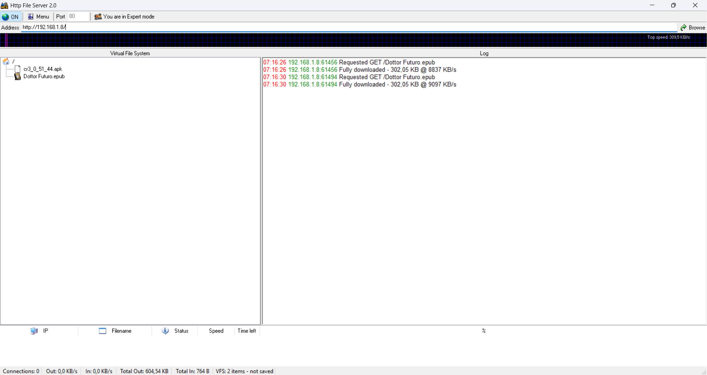

Zero Installazione
Un singolo eseguibile da avviare senza permessi admin, direttamente da cartella o chiavetta.
Open Source
Licenza GNU GPL v2 — "Forever free software". Il codice sorgente è pubblico e liberamente consultabile.
LAN Ready
Perfetto per laboratori senza accesso a Internet. Il traffico resta sempre nella rete locale.
Persistenza nativa
HFS 3 salva ogni modifica (VFS, utenti, permessi) istantaneamente in file JSON/YAML — nessuna perdita di configurazione al riavvio.
HFS (HTTP File Server) è un progetto di Massimo Rejetto nato nei primi anni 2000 per condividere file in LAN senza configurazioni complesse. La versione 3 — riscritta da zero — aggiunge un'interfaccia web moderna, un Virtual File System configurabile, gestione account granulare e supporto cross-platform (Windows, Linux, macOS).
.exe Windows con interfaccia grafica desktop — semplicissima, ancora molto usata. HFS 3 è riscritta in modo moderno: si gestisce interamente via browser, salva le configurazioni in JSON/YAML e gira su qualsiasi sistema operativo. Per il laboratorio scolastico, HFS 3 è la scelta consigliata.
IP: 192.168.1.8
Porta: 80
Nessuna installazione
Il PC del docente diventa il server: esegue HFS, configura il Virtual File System e rimane in ascolto sulla porta 80. I PC degli studenti sono i client: aprono il browser, digitano l'IP del docente e scaricano i file — esattamente come un sito web, ma in LAN.
Indirizzo da digitare nel browser degli studenti:
http://192.168.1.8/
GET, il server risponde con un codice di stato (200 OK, 404 Not Found…) e i dati del file. Aprendo gli strumenti sviluppatore del browser (F12 → Network) si vede tutto in diretta.
Clicca su una schermata per ingrandirla.


.exe da circa 1 MB. Nessuna dipendenza, nessuna configurazione, nessun browser richiesto per l'admin. Lo avvii, trascini i file dentro la finestra e in 10 secondi il tuo PC è un server HTTP. È con questa versione che tutto è iniziato — ed è ancora oggi il modo più rapido in assoluto per condividere un file in LAN.

Quello che vedi nello screenshot è reale e funzionante: il VFS a sinistra mostra due file condivisi (un APK Android e un ebook .epub), il log a destra registra in tempo reale ogni richiesta HTTP con IP del client, nome file e velocità di trasferimento (fino a 9.097 KB/s — circa 9 MB/s in LAN).
La barra di stato in basso mostra tutto d'un colpo: connessioni attive, dati in entrata/uscita, totale trasferito, numero di elementi nel VFS. È un pannello di controllo essenziale ma completo — niente di superfluo.
.zip per Windows, estrailo in una cartella. Nessuna installazione richiesta./materiale). La configurazione viene salvata automaticamente in JSON — persiste al riavvio.- Osservare il protocollo HTTP — F12 → Network mentre si scarica un file: richiesta GET, response header, codice 200 OK tutto visibile in diretta.
- Simulazione client-server — il PC docente è il server, i PC studenti sono i client. Discussione dal vivo su ruoli, porte, indirizzi IP.
- Distribuzione materiale d'aula — invece di chiavette USB o email, tutto arriva in pochi secondi a tutti i banchi.
- Raccolta elaborati — con la funzione upload abilitata, gli studenti inviano i propri file al server senza email o account.
- Test di raggiungibilità —
ping 192.168.1.8prima di aprire il browser: verifica della rete a livello 3 prima del livello 7. - Trovare il proprio IP — esercizio base:
ipconfigsu Windows per scoprire l'indirizzo della propria scheda di rete. - Esplorare il VFS — confrontare la struttura virtuale esposta dal server con le cartelle reali del PC: astrazione vs. realtà fisica.
- Zero installazione — un singolo eseguibile
- Gratuito e open source (GPL v2)
- Interfaccia admin completa via browser
- Virtual File System configurabile
- Persistenza configurazione in JSON/YAML
- Log connessioni in tempo reale
- Supporta upload (raccolta elaborati)
- Cross-platform: Windows, Linux, macOS
- Compatibile con qualsiasi browser moderno
- Funziona completamente offline
- Nessun HTTPS nativo — traffico in chiaro in LAN
- Non adatto a reti pubbliche o produzione
- Il firewall di Windows potrebbe bloccare al primo avvio
- Gli IP locali cambiano se la rete usa DHCP
- HFS 3 richiede Node.js installato su alcune configurazioni
192.168.1.x). Diverso dall'IP pubblico usato su Internet.80, HTTPS la 443. HFS può usare qualsiasi porta libera.Pronto a provarlo?
Scarica HFS 3, avvialo e in meno di un minuto il tuo PC è un server web.